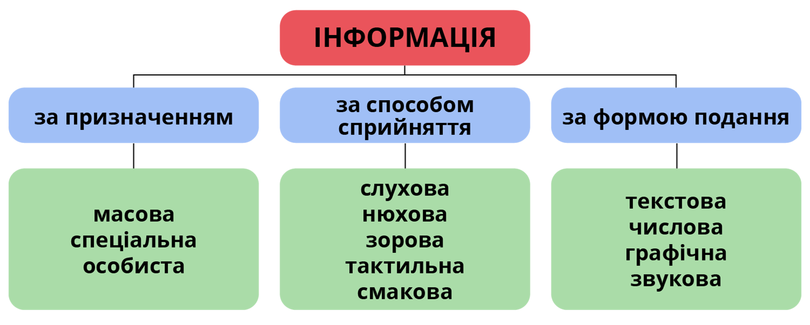
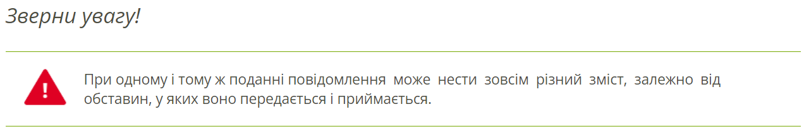

Чому така велика роль надається інформаційним системам? Наше суспільство стало інформаційним, ми живемо в інформаційному суспільстві, тому людина повинна вміти до нього пристосуватись.
Що ж таке інформація? Чи існує її чітке визначення?
Інформація — одне з основних понять інформатики, строге й універсальне визначення якого неможливе. Інформація є відображенням реалій навколишнього світу в свідомості людини.
Інформація буває відкритою та з обмеженим доступом, правдивою, хибною або відвертою брехнею, вона може продаватися і купуватись (тобто бути товаром).
Повідомлення — це сигнали, які людина сприймає своїми органами чуття (зір, дотик, нюх, слух тощо).
Повідомлення можуть подаватися багатьма способами, наприклад: світловими сигналами, електричними сигналами, малюнками, звуками, схемами, текстом тощо.
Дані — це повідомлення, які подано у вигляді, зручному для зберігання, передавання та опрацьовування.
Інформаційними процесами називають процеси, що здійснюються над повідомленнями.
Основними інформаційними процесами є процеси пов’язані з повідомленнями, а саме: передавання, опрацювання та зберігання. Існують і більш складні інформаційні процеси, такі як пошук, використання, групування, розповсюдження, сортування, кодування, захист, накопичення повідомлень та ін.
Сукупність взаємопов’язаних елементів, призначена для реалізації інформаційних процесів, називається інформаційною системою.
Інформація — одне з основних понять інформатики, строге й універсальне визначення якого неможливе. Інформація є відображенням реалій навколишнього світу в свідомості людини.
Апаратна складова — це комплекс технічних засобів, який включає пристрої опрацювання і зберігання даних, пристрої введення та виведення даних, засоби міжкомп’ютерного зв’язку.
Програмна складова — це комплекс програм, які забезпечують реалізацію інформаційних процесів пристроями інформаційної системи.
Людині, щоб почуватися впевненою в сучасному світі, слід сформувати передусім такі знання та вміння: